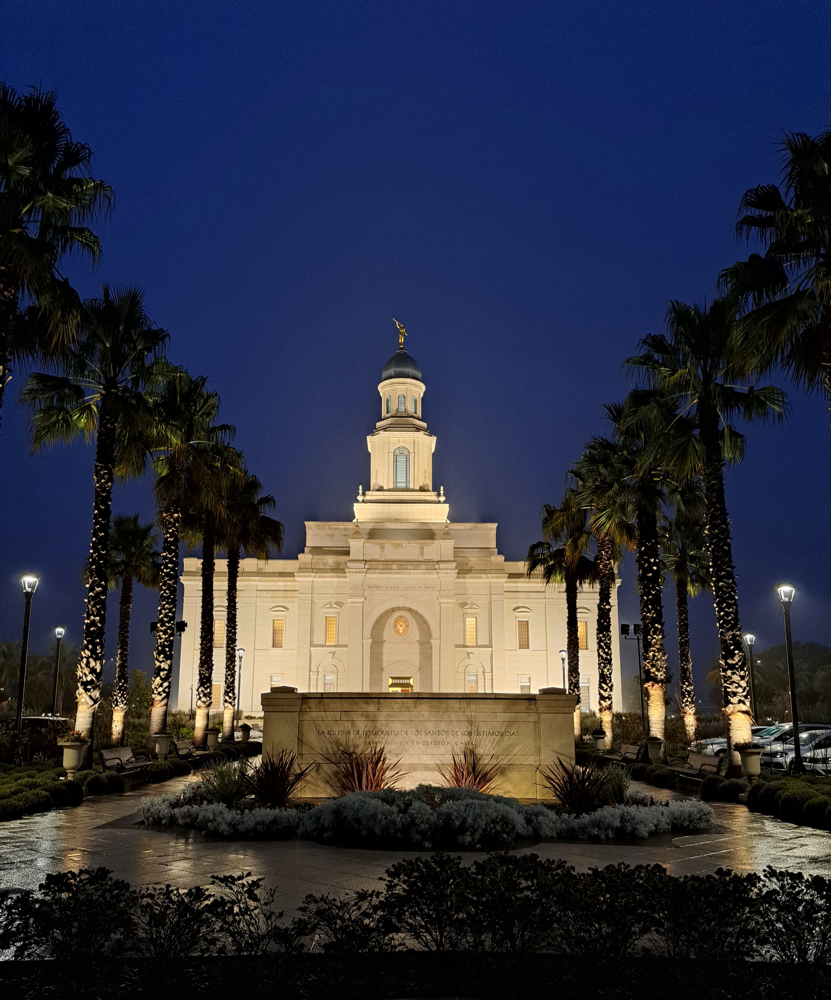

Ceremonia Religiosa
Te invitamos a compartir este momento tan especial en nuestra vida.
Fecha: Sábado 11 de octubre de 2025
Hora de Ingreso: 8:30 hrs. para poder arreglarnos con tiempo
Lugar: Templo Av. Pedro de Valdivia 1525
Después de la ceremonia en el templo:
El gran matrimonio tendrá una sesión de fotos. Agradeceremos a todos su presencia para las primeras fotos en grupo. Posteriormente, podrán dirigirse caminando hacia la recepción, ubicada a unas cuadras del templo (dirección disponible en la página principal).
Es importante que todos estén presentes en la iglesia a las 12:30 horas para recibir a los novios a las 13:00 horas.
